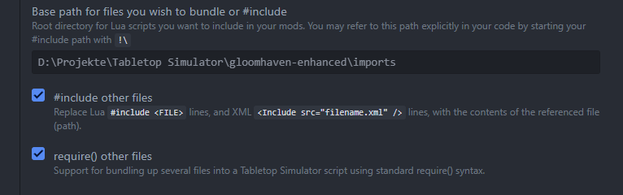
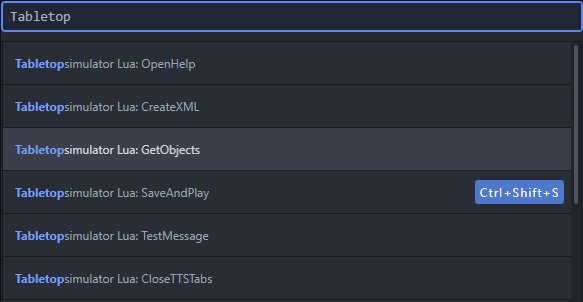

Using the scripts
Most custom content requires some script, that is either added directly to the content or tells the mod about the content. Therefore, you first have to download the scripts from the latest release. TODO: Link to releases. This contains the scripts that you have to add to your components to make them work with the mod. It also contains so-called API scripts, which are used to further integrate the content into the mod (e.g. in order to register classes or conditions). How each API should be used is described in the relevant sections.
Generally, you have two ways to work with the downloaded scripts. Either through an external tool (the Atom text editor), or the scripting window inside TTS. The first method is the preferred way. It requires a bit of setup, but will be easier to work with afterwards, especially if you later want to update the content for newer versions of the mod.
After you downloaded the scripts from the latest release, you’ll find two folders inside there: base and bundled.
Which one you need depends on the method you want to use.
If you want to use the Atom editor, you need the base folder, otherwise you need the bundled folder.
Extract the required folder somewhere in you file system.
Using the Atom editor
Atom is a free text editor with a lot of features to simplify scripting. Berserk developed an official plugin for it which works with TTS. With the plugin installed, Atom will receive the scripts of the currently opened TTS mod. You can then edit the scripts in Atom directly and send them back to TTS, so you don’t have to use the TTS scripting editor (which is quite horrible…). It also helps with things like auto-completion and finding errors. To use Atom, follow those steps:
-
Install the latest version of Atom
-
Checkout the TTS knowledge base on how to install the TTS plugin
-
Open Atom and select from to top menu
-
Navigate to the settings for the TTS plugin

-
Find those settings: 
-
If not already done check
#include other filesandrequire() other files -
Set the value for
Base path for files you wish to bundle or #includeto the path where you extracted the downloaded scripts (thebasefolder)
When you now open your mod with Atom running, it will automatically download the scripts from TTS and show them in Atom.
If this is not done automatically (e.g. if you started Atom after loading your mod), you can load them manually again using the GetObjects command.
- INFO
-
To find commands in Atom use the keyboard shortcut Ctrl+Shift+P. This will open a small window where you can type the name of a command and Atom shows you a list of matching commands. Select the one you want with the keyboard and hit Enter. 
The list of available scripts will show on the left side of Atom

Edit the scripts to your need send them back using the SaveAndPlay command (keyboard shortcut Ctrl+Shift+S)
- INFO
-
If you change which components are on the table in your mod you have create a save in TTS again and load the created save right again. E.g. if you pull out a component from a bag and want to edit the script on that component, first save and load the created save again.
Using the TTS script editor
When using the TTS scripting editor, you have to use the bundled version of the scripts.
We developed the mod by splitting the scripts into different files which makes it a lot easier to maintain.
However, TTS doesn’t understand that splitting and requires to have one script per object.
So all files need to be bundled together into one file again for TTS to work.
Normally, this would be done by the Atom plugin automatically.
The scripts within the bundled folder are the result of such a bundling.
The scripts then are rather big and also contain code to make the bundling work.
They always look like this:
-- Bundled by luabundle {"version":"1.6.0"}
local __bundle_require, __bundle_loaded, __bundle_register, __bundle_modules = (function(superRequire)
local loadingPlaceholder = {[{}] = true}
-- ..
-- lots more lines
-- ..
end)(require)
__bundle_register("__root", function(require, _LOADED, __bundle_register, __bundle_modules)
-- This is the relevant part
require("Figures/CharacterMini") -- this line also has to be removed
-- The required code goes here
end)
__bundle_register("Figures/CharacterMini", function(require, _LOADED, __bundle_register, __bundle_modules)
-- ..
-- even more lines here
-- ..
end)When you integrate those script you need to look for the line bundle_register("root", function(require, _LOADED, bundle_register, bundle_modules).
Everything between this line and the first end) is the actual script for the object.
The previous line are required for the bundling to work and the following lines are the previously split files that are now put together.
You don’t need to touch those.
Whenever this documentation mentions to include a script onto you object, you first have to locate the correct bundled file. This is given as the title of the script example.
info = {
hpColour = "#5080C1",
hpTextColour = "#B70F0F",
startingHealth = 10,
}
FrameOffset = 230
require("Figures.CharacterMini")E.g. here it means you have to find the Figures/CharacterMini.ttslua script within the bundled folder.
Open that script and find the previously mentioned bundle_register("root") line.
Copy the script the documentation mentioned after this line and remove everything till the first end (excluding the end).
With this example, the final script would look like this:
-- Bundled by luabundle {"version":"1.6.0"}
local __bundle_require, __bundle_loaded, __bundle_register, __bundle_modules = (function(superRequire)
local loadingPlaceholder = {[{}] = true}
-- ..
-- lots more lines
-- ..
end)(require)
__bundle_register("__root", function(require, _LOADED, __bundle_register, __bundle_modules)
info = {
hpColour = "#5080C1",
hpTextColour = "#B70F0F",
startingHealth = 10,
}
FrameOffset = 230
require("Figures.CharacterMini")
end)
__bundle_register("Figures/CharacterMini", function(require, _LOADED, __bundle_register, __bundle_modules)
-- ..
-- even more lines here
-- ..
end)This is the script you then have to add to the object in the TTS scripting window and use the Save and Play button. The same logic applies for the UI scripts.
If the example code doesn’t have a title it means there’s no bundled script available, and you have to include the script as it is provided in the example.